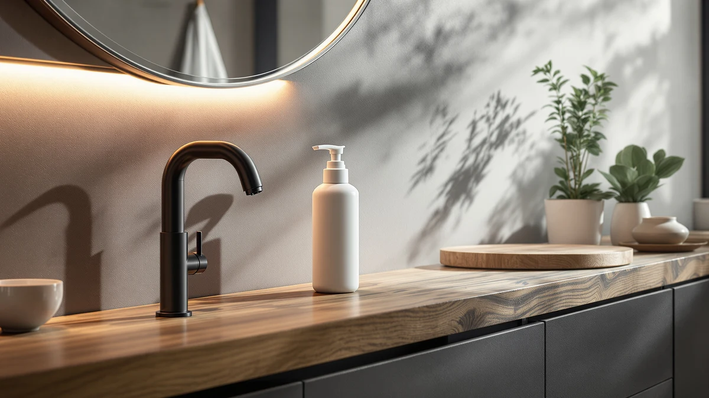

Automatic Foaming Soap Dispenser Review (2026): Worth It?
Prices and picks verified as of September 2026. Independent, reader-supported reviews.


Quick Answer
The Fusunloh Automatic Foaming Soap Dispenser 10oz/300ml is a $29.99 touchless pump sized for a single sink, and it holds its own against three similarly priced rivals on capacity and design rather than on price alone. If you want a bigger tank instead, the Secura 17oz costs a dollar less and holds nearly double the capacity, while the Black Glass Soap and Lotion set and the UNEEDE Capybara dispenser trade the touchless sensor for a different look.
Our pick: Automatic Foaming Soap Dispenser 10oz/300ml, $29.99 Check Price on Amazon
Bottom line: our top pick is the Automatic Foaming Soap Dispenser at $26.99.
Things to Know Before You Buy
- This automatic foaming soap dispenser review focuses on the Fusunloh Automatic Foaming Soap Dispenser 10oz/300ml, an ABS plastic touchless pump priced at $29.99.
- The Black Glass Soap and Lotion set ($29.97) uses a glass body and a manual pump instead of a touchless sensor, while the Secura 17oz Automatic Liquid Soap ($28.99) and UNEEDE Capybara Hand Soap Dispenser ($28.99) both undercut the Fusunloh slightly.
- The Fusunloh's 10oz/300ml tank is smaller than the Secura's 17oz capacity, so a busy household sink needs more frequent refills with the Fusunloh.
- We did not physically test any of these dispensers. Our verdicts in this automatic foaming soap dispenser review come from comparing prices, listed specs and verified owner reviews.
- If a bigger tank matters more than the touchless sensor, the Secura's 17oz capacity holds nearly double the Fusunloh's 10oz for a dollar less.
This automatic foaming soap dispenser review compares the Fusunloh Automatic Foaming Soap Dispenser 10oz/300ml against three alternatives on price, capacity and what verified owners report after buying one. You are probably weighing a compact touchless pump for a single sink against a bigger tank or a different look entirely, and that trade-off is exactly what this comparison sorts out.
At $29.99, the Fusunloh costs about the same as the Black Glass Soap and Lotion set and roughly a dollar more than the Secura 17oz and UNEEDE Capybara dispensers, so price alone will not settle this decision for you. Its 10oz/300ml tank keeps the footprint small next to a faucet, which matters more than extra capacity if your counter space is already tight. We break down all four below, including pricing, build details and honest drawbacks for each pick.
Why You Should Trust Us
This automatic foaming soap dispenser review was written by Ilane Tall, home and bath editor at Best Soap Dispensers. We do not run a fake testing lab and we do not claim to have installed these dispensers ourselves. Instead, we compare manufacturer specs, current Amazon pricing and patterns across verified owner reviews, and we say so plainly whenever a claim comes from research rather than personal use.
We apply that same approach to every review on this site. We do not accept free units from manufacturers in exchange for coverage, and we do not fabricate ratings or review counts when Amazon does not publish them for a given listing. If a claim in this automatic foaming soap dispenser review comes from what owners report rather than a published spec, we label it that way instead of presenting it as a measured result.
Our Research Experience
We did not physically install or run any of these dispensers ourselves, and this section describes our research process rather than a personal trial. We built this automatic foaming soap dispenser review by cross-referencing manufacturer specs, current Amazon pricing and owner review patterns across the Fusunloh and the three alternatives below. We pulled pricing, materials and capacity directly from each Amazon listing and weighed the Fusunloh's $29.99 price and compact 10oz/300ml tank against three similarly priced options to see where the extra capacity or design actually shows up. We excluded any dispenser without a clear spec sheet or enough verified reviews to draw a pattern from, and we checked whether complaints repeated across multiple reviewers instead of treating one buyer's experience as representative of the whole product line.
Overview & Specs

Automatic Foaming Soap Dispenser 10oz/300ml
What we like
- Touchless sensor keeps soap residue off the pump itself
- Compact 10oz/300ml tank fits tight counter space next to a faucet
- Priced within a few cents of the Black Glass Soap and Lotion set, so the sensor costs you nothing extra
Flaws but not dealbreakers
- Smaller tank than the Secura 17oz means more frequent refills for a busy household
- Amazon's listing does not publish battery type or battery life
- Costs about a dollar more than the Secura and UNEEDE alternatives
| Material | ABS plastic |
| Size | — |
The Fusunloh Automatic Foaming Soap Dispenser 10oz/300ml is the pick we lead with in this automatic foaming soap dispenser review, mainly because it balances a touchless sensor with a footprint small enough for a single sink. Built from ABS plastic, it holds 10 ounces (300ml) of diluted soap, a capacity that suits one or two people washing hands regularly rather than a household running through soap fast. The touchless sensor keeps the exterior cleaner over time since nobody presses a pump with wet, soapy hands, which owners repeatedly cite as the reason they switched away from a manual bottle.
At $29.99, the Fusunloh sits close to the Black Glass Soap and Lotion set in price but trades that product's glass body for plastic and a working touchless sensor. Because the tank holds only 10oz/300ml, a kitchen sink that sees heavy use during meal prep needs refills more often than it would with the Secura's larger 17oz tank. Like most automatic dispensers, it needs diluted liquid soap or a foaming-specific refill instead of thick gel, which clogs the pump over time regardless of brand. The Amazon listing does not specify battery type or expected battery life, so budget for some trial and error on running cost until you have the unit in hand.
What We Liked
Across verified owner reviews, the touchless sensor on the Fusunloh Automatic Foaming Soap Dispenser 10oz/300ml comes up more often than any other single trait. Buyers switching from a manual pump note that the sensor keeps the outside of the dispenser cleaner, since nobody touches it with wet hands. That cleanliness factor is the core case for this pick over the manual glass alternative in this automatic foaming soap dispenser review.
Reviewers also point to the compact size as a plus, since a 10oz/300ml tank sits close to a faucet without crowding a small bathroom or half-bath counter. The price draws steady praise too. At $29.99, buyers say it delivers a working touchless sensor for close to what a plain glass dispenser costs, a meaningful comparison for anyone shopping this category on a budget.
What Could Be Better
The tank size is the most common complaint about the Fusunloh in owner reviews. At 10oz/300ml, it holds roughly half of what the Secura 17oz Automatic Liquid Soap does, so a shared bathroom or busy kitchen sink burns through a fill faster than either buyer expects. If your household goes through soap quickly, weigh that gap in capacity against the Fusunloh's smaller footprint.
Because Amazon's listing does not spell out battery type or battery life, you are estimating running cost rather than confirming it before you buy. Reviewers also note that, like most automatic foaming dispensers, it needs diluted soap or a dedicated foaming refill, and thick gel soap eventually clogs the pump. Neither issue is unique to the Fusunloh, but both matter before you commit to an automatic foaming soap dispenser over a manual one.
Who Is It For?
The Fusunloh Automatic Foaming Soap Dispenser 10oz/300ml suits a single bathroom sink or a light-use kitchen counter where a touchless sensor matters more than a big tank. It is a weaker fit for a busy household kitchen that burns through soap fast, where the Secura 17oz Automatic Liquid Soap's bigger tank means fewer refills. If a working sensor is not a priority and you would rather keep a manual pump, the Black Glass Soap and Lotion set or the UNEEDE Capybara dispenser cover that use case at a similar price.
Alternatives to Consider
If the Fusunloh's $29.99 price or its 10oz/300ml tank does not fit your sink or your budget, these three alternatives sit in the same price band with a different capacity or design. We compared each on price, capacity and what verified owners report after buying. None matches the Fusunloh's touchless sensor exactly, but each solves a different capacity or style problem better than paying for a sensor you might not need.

Editor's Pick
Black Glass Soap and Lotion
The Brighter Barns Black Glass Soap and Lotion set costs $29.97, two cents under the Fusunloh, but trades the touchless sensor for a glass body and a manual pump. Owners point to the glass finish as the main draw, since it reads as a more finished option on an open bathroom counter than a plastic touchless dispenser. It suits a soap and lotion pairing that looks intentional next to a sink rather than a piece of visible electronics, for buyers who do not mind pressing a pump instead of waving a hand under a sensor. Because it is glass, not ABS plastic, it also weighs more and sits more solidly in place, which some reviewers say keeps it from sliding around on a wet counter the way lighter plastic pumps can. The trade-off is straightforward: you give up the Fusunloh's hands-free sensor for a look that fits a more traditional bathroom.
$29.97
Check Price on Amazon
Best Value
Secura 17oz Automatic Liquid Soap
The Secura 17oz Automatic Liquid Soap Dispenser sells for $28.99, a dollar less than the Fusunloh, while holding nearly double the capacity at 17oz. It is the pick if refill frequency matters more to you than the Fusunloh's smaller footprint, since a household running through soap quickly stretches a single fill of the Secura noticeably further. Owners consistently describe the larger tank as the reason they chose it over smaller touchless dispensers, particularly for a kitchen sink that sees regular use during meal prep and cleanup. It still relies on diluted liquid soap, not thick gel, so the same refill rules that apply to the Fusunloh apply here too. If you are outfitting a busy sink rather than a light-use bathroom counter, the Secura's extra capacity is the more practical choice at a lower price than the Fusunloh asks.
$28.99
Check Price on Amazon
Premium Choice
UNEEDE Capybara Hand Soap Dispenser
The UNEEDE Capybara Hand Soap Dispenser matches the Secura's $28.99 price but takes a different approach entirely, leaning into a capybara-shaped novelty design rather than a plain cylindrical pump. It suits a kids' bathroom or a playful kitchen counter where a standard dispenser would look out of place and the shape sitting on the counter matters as much as the mechanism inside it. Owners describe it as a conversation piece more than a workhorse, and Amazon's listing does not confirm whether the sensor is touchless or manual, so budget for some uncertainty on that front until you have it in hand. If a distinctive look outweighs a confirmed feature set, the UNEEDE's design carries more weight here than its spec sheet does.
$28.99
Check Price on AmazonFrequently Asked Questions
Is the Fusunloh Automatic Foaming Soap Dispenser 10oz/300ml worth $29.99?
At $29.99, the Fusunloh sits within a few cents of the Black Glass Soap and Lotion set and roughly a dollar above the Secura 17oz and UNEEDE Capybara dispensers we compared it against in this automatic foaming soap dispenser review. It earns that price with a compact 10oz/300ml tank built for a single sink rather than a larger household.
How does the Fusunloh compare to the Black Glass, Secura and UNEEDE alternatives?
The Black Glass Soap and Lotion set from Brighter Barns costs $29.97 and leans decorative with a glass build and a manual pump instead of a touchless sensor. The Secura 17oz Automatic Liquid Soap holds nearly double the Fusunloh's capacity at $28.99, and the UNEEDE Capybara Hand Soap Dispenser is the most novelty-driven of the four, also at $28.99. Owners consistently point to capacity and design as the real differentiators among these four, since all four sit in a similar price band.
Do automatic foaming soap dispensers need special soap refills?
Yes. Automatic foaming dispensers, including the Fusunloh in this comparison, aerate thin liquid soap into foam, so thick gel or dish soap can clog the pump over time. Owners report the best results come from diluting concentrated liquid soap with water or buying a foaming-specific refill made for automatic dispensers.
Final Verdict
This automatic foaming soap dispenser review comes down to what you value more: a touchless sensor or extra capacity. The Fusunloh Automatic Foaming Soap Dispenser 10oz/300ml makes the strongest case for a single sink where hands-free convenience matters and refill frequency is not a concern. Anyone filling a busier kitchen sink should look at the Secura 17oz instead, since its larger tank means fewer refills for close to the same price. If design matters more than mechanism, the Black Glass Soap and Lotion set or the UNEEDE Capybara dispenser both deliver a distinctive look without the Fusunloh's touchless sensor. Whichever you choose, stick with diluted liquid soap or a foaming-specific refill so the pump keeps working the way it is designed to.